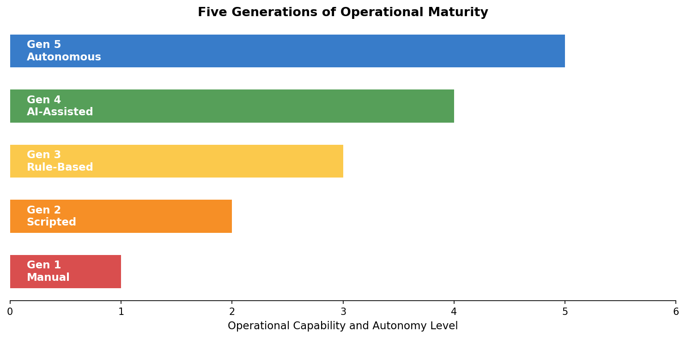
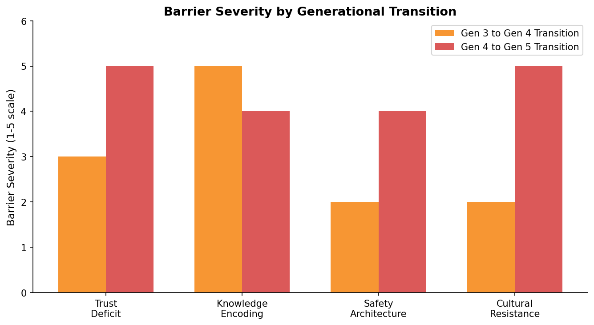
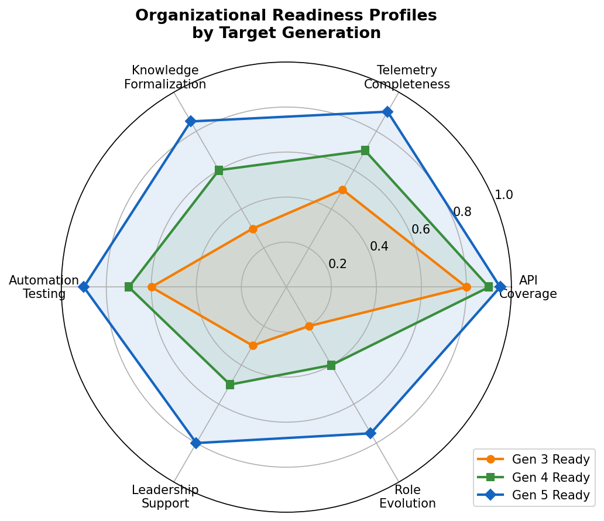
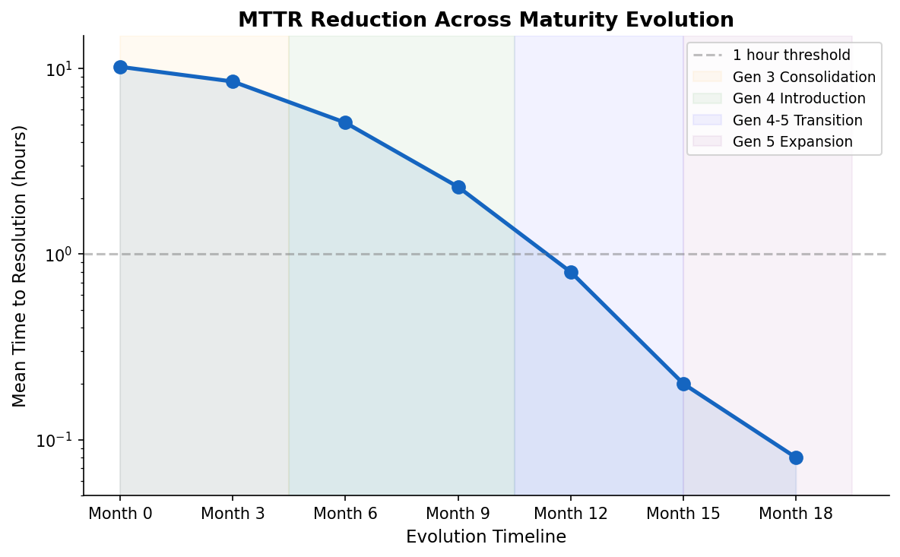
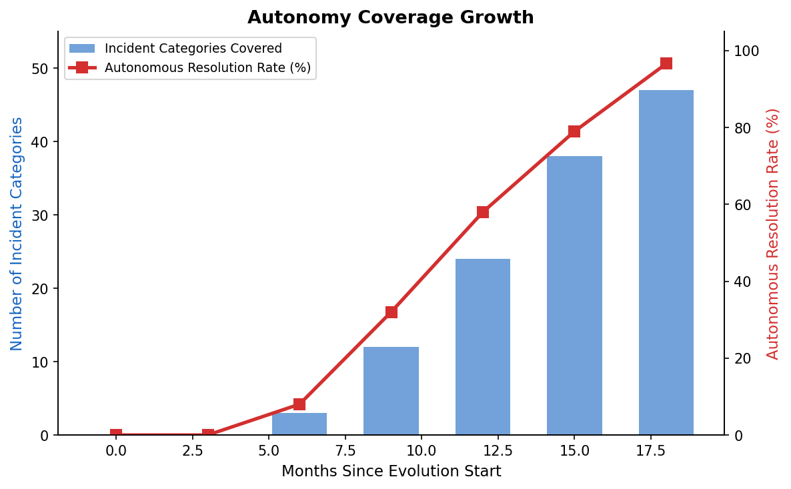

From Reactive to Autonomous: Evolution of AI Operations in Cloud Network Infrastructure
Abstract. The operational model for cloud network infrastructure has undergone a fundamental transformation over the past decade. What began as manual, human-driven troubleshooting has evolved through scripted automation, rule-based systems, and AI-assisted operations into fully autonomous incident resolution. This paper traces the evolution of AI operations (AIOps) in cloud network infrastructure, identifying the architectural patterns, organizational challenges, and technical inflection points that enabled each generational transition.
Drawing from production experience operating network infrastructure at hyperscale, we present a maturity model that characterizes five distinct operational generations, analyze the technical and organizational barriers that impede transitions between generations, and document the metrics that indicate readiness for increased autonomy.
Introduction
Cloud network infrastructure has grown to a scale that challenges every assumption of traditional operations models. A major cloud provider today operates tens of millions of network devices across hundreds of data centers, generating millions of telemetry signals per second and thousands of operational incidents per day. The mismatch between the growth rate of infrastructure and the growth rate of operational expertise has created a persistent and widening gap that no amount of hiring can close.
The industry response has been a progressive adoption of AI and automation technologies, often grouped under the banner of AIOps. However, the term obscures significant variation in maturity, capability, and operational authority. A system that generates alert summaries and a system that autonomously remediates hardware failures are both called AIOps, yet they represent fundamentally different operational paradigms.
Despite significant industry investment, most organizations remain stuck at early maturity levels. Surveys consistently report that fewer than 15% of enterprises have achieved meaningful autonomous operations. The barriers are not purely technical: organizations face challenges in building trust in AI systems, encoding operational knowledge in machine-executable forms, designing safety mechanisms, and evolving operational culture.
This paper is complemented by a companion work that presents the detailed agentic AI architecture enabling Generation 5 autonomous operations, including the multi-agent coordination framework and safety mechanisms.
The Five-Generation Maturity Model

Figure 1. Five generations of operational maturity in cloud network infrastructure, from manual CLI-based operations to fully autonomous AI-driven resolution.
| Generation | Pattern | Human Role | AI Role | Authority |
|---|---|---|---|---|
| Gen 1: Manual | SSH and CLI | Investigator, executor | None | Human-only |
| Gen 2: Scripted | Runbook automation | Triggerer, supervisor | None | Human-triggered |
| Gen 3: Rule-Based | Event-condition-action | Exception handler | Pattern matching | System-triggered, bounded |
| Gen 4: AI-Assisted | Recommendation engine | Decision maker | Advisor, analyst | Human-approved |
| Gen 5: Autonomous | Multi-agent orchestration | Auditor, policy setter | Perceiver, reasoner, actor | AI-driven, safety-bounded |
Generation 1: Manual Operations
In the earliest operational model, engineers manually investigate and resolve every incident by connecting directly to network devices via SSH or console access. The operational workflow is entirely human-driven: an engineer receives an alert, logs into the affected device, examines its state, formulates a hypothesis, and executes a fix.
Knowledge exists primarily in engineers' heads, supplemented by tribal documentation. This model works at small scale but becomes unsustainable as infrastructure grows. Response time is bounded by human availability and expertise, and quality varies dramatically across shifts and individuals.
Generation 2: Scripted Automation
The first evolutionary step encodes common procedures into executable scripts and runbooks. Engineers still make all decisions but delegate execution to automation. A typical workflow has an engineer diagnose the issue, select the appropriate script from a runbook library, and monitor its execution.
This generation dramatically reduces execution time for known procedures but does not address diagnosis or decision-making. The critical limitation is that humans must still identify which automation to invoke, and novel incidents still require manual investigation.
Generation 3: Rule-Based Automation
The third generation introduces event-driven automation where predefined rules trigger remediation without human intervention. Systems monitor for specific patterns and execute corresponding actions automatically, using event-condition-action logic.
While effective for well-understood failure modes, rule-based systems struggle with novel combinations, cascading failures, and situations that require judgment rather than pattern matching. The rule base grows unwieldy over time, with rule conflicts and maintenance burden increasing quadratically with the number of rules.
Generation 4: AI-Assisted Operations
The fourth generation introduces AI systems that analyze incidents and recommend actions, but humans retain final decision authority. Machine learning models analyze telemetry, identify probable root causes, and suggest remediation steps that human operators approve or reject.
This generation achieves the first qualitative change in operational capability: the system can now reason about novel situations using learned patterns rather than explicit rules. However, it introduces a new bottleneck. Human approval latency becomes the dominant factor in resolution time. If the AI is right 95% of the time but a human must approve every action, the operational speed is capped by human availability.
Generation 5: Autonomous Operations
The fifth and most advanced generation grants AI systems the authority to perceive, reason, and act on network incidents without requiring human approval for each decision. The human role shifts from operator to auditor and policy setter, intervening only for exceptional cases that exceed the system's authority boundaries.
This generation requires the co-development of four capabilities: autonomous reasoning, safety mechanisms, trust frameworks, and knowledge encoding. It is not merely a faster version of Generation 4 but represents a fundamentally different operational paradigm.
Generational Transitions
The transitions between generations are not smooth and continuous. Each involves a discontinuous shift in architecture, organizational model, and risk profile.
Transition 1-2: Codifying Tribal Knowledge
The shift from manual to scripted operations requires converting individual expertise into shared, executable procedures. The primary barrier is knowledge extraction: experienced engineers often cannot articulate their troubleshooting logic because it has become intuitive. The key enabler is a culture of documentation and peer review that values reproducibility over heroics.
Transition 2-3: Closing the Human Loop
Moving from human-triggered to system-triggered automation requires confidence that the automation will behave correctly without supervision. This transition demands better monitoring (to detect when automation fails), better rollback (to undo incorrect actions), and organizational comfort with machines taking action without explicit permission.
Transition 3-4: From Rules to Learning
The shift from rule-based to AI-assisted operations requires high-quality labeled data, model training infrastructure, and mechanisms for humans to provide feedback on AI recommendations. The critical enabler is structured telemetry: AI models require consistent, machine-readable operational data rather than the ad hoc alerts designed for human consumption.
Transition 4-5: From Advice to Authority
The most challenging transition is from AI-assisted to autonomous. It requires not just better AI but a comprehensive trust framework, graduated authority model, safety mechanisms with formal guarantees, and cultural evolution from "AI helps me" to "I oversee AI." This represents the single largest discontinuity in the maturity model.
Barriers to Evolution

Figure 2. The four primary barriers preventing organizations from advancing through operational maturity generations.
Four primary barriers prevent organizations from advancing through the maturity model:
The Trust Deficit
Trust in autonomous systems is built incrementally through demonstrated reliability but can be destroyed instantly by a single visible failure. This asymmetry creates a natural bias toward human control. Organizations develop "trust debt" when AI systems make errors, requiring extended periods of perfect performance to recover. The trust barrier is particularly acute at the Gen 4 to Gen 5 transition, where organizations must fundamentally change their risk model.
Knowledge Encoding Challenges
Operational knowledge exists in diverse forms: formal documentation, tribal knowledge, muscle memory, and pattern recognition developed through experience. No single encoding mechanism can capture all of these effectively. The challenge is not just extracting knowledge but keeping it current as infrastructure evolves.
Safety Architecture Gap
As operational authority transfers to AI systems, the consequences of errors grow while the human ability to intervene shrinks. Safety mechanisms must evolve from human judgment ("does this feel right?") to formal verification ("can I prove this is safe?"). Most organizations lack the safety engineering expertise to design these mechanisms.
Cultural Resistance
Operational culture traditionally values individual expertise and heroic incident response. Autonomous operations devalue these behaviors, creating identity threats for experienced engineers. The cultural transition requires new career paths, incentive structures, and psychological safety for adapting to fundamentally different roles.
Readiness Indicators

Figure 3. Organizational readiness radar across three dimensions: technical infrastructure, process maturity, and cultural preparedness.
We propose three dimensions of readiness indicators that signal when an organization is prepared to advance to the next generation:
Technical Readiness: Telemetry coverage, automation framework maturity, integration depth between monitoring and execution systems, AI model accuracy in recommendation mode.
Process Readiness: Change management maturity, incident taxonomy standardization, knowledge base coverage and freshness, formal safety analysis capability.
Cultural Readiness: Automation investment (percentage of engineering time dedicated to building vs. using tools), error tolerance (learning vs. blame response to automation failures), role evolution clarity, and active leadership sponsorship of autonomy initiatives.
Balanced advancement across all three dimensions is critical. Organizations that advance technically without process and cultural alignment create brittle systems that regress under stress.
Production Experience
We present quantitative results from navigating the full maturity evolution in a hyperscale cloud network operations environment over approximately 18 months.
Starting Conditions
The environment at the start of our evolution exhibited characteristics typical of a mature Generation 2 organization with some Generation 3 elements:
- Over 12 million managed network devices
- Approximately 3,000 operational incidents per day
- Mean time to resolution of 10.2 hours for common incident categories
- 847 operational runbooks, of which approximately 60% were partially automated
- Incident resolution quality highly variable across engineering shifts
Evolution Timeline
| Phase | Duration | Focus |
|---|---|---|
| Gen 3 consolidation | 3 months | Rule standardization |
| Gen 4 introduction | 4 months | AI recommendation engine |
| Gen 4 to 5 transition | 5 months | Progressive authority |
| Gen 5 expansion | 6 months | Coverage growth |
Key Results

Figure 4. Mean time to resolution (MTTR) across operational generations. Gen 5 autonomous operations achieve 122x improvement over the Gen 2/3 baseline.
The evolution produced measurable improvements across all key operational metrics:
- MTTR reduction: From 10.2 hours (Gen 2/3 baseline) to 5 minutes (Gen 5), representing a 122x improvement for autonomously resolved incidents.
- Autonomous resolution rate: 96.6% of qualified incidents resolved without human intervention.
- Coverage expansion: From 12 incident categories at Gen 5 launch to 47 categories after 6 months of expansion.
- Safety record: Zero severity-1 or severity-2 incidents caused by autonomous actions over the full deployment period.
- Engineer redeployment: 40% of on-call engineering time reclaimed for proactive improvement work.

Figure 5. Autonomous coverage expansion over the 6-month Gen 5 growth phase, growing from 12 to 47 incident categories.
Transition Challenges Encountered
Gen 3 to 4 transition: The primary challenge was telemetry quality. Existing monitoring systems generated alerts optimized for human interpretation (natural language descriptions, context-dependent severity) rather than machine consumption (structured fields, consistent taxonomy). A 3-month effort to restructure telemetry was required before AI models could be trained effectively.
Gen 4 to 5 transition: The primary challenge was trust building. Despite the AI system demonstrating 94% recommendation accuracy during the Gen 4 phase, obtaining organizational approval for autonomous execution required extensive demonstration, incremental authority expansion, and detailed safety analysis.
Lessons Learned
Start with the Boring Problems
The most effective path to autonomous operations begins with high-frequency, low-complexity incidents rather than challenging edge cases. These incidents offer sufficient training data, low consequence of errors during early trust-building, high visibility of operational improvement, and rapid iteration cycles due to frequent occurrence.
Attempting to automate complex, rare incidents first is a common anti-pattern that produces impressive demos but limited production value.
Trust is Earned in Milliseconds but Lost in Seconds
Building organizational trust in autonomous systems requires extended periods of demonstrated reliability. A single visible failure can eliminate months of accumulated trust. This asymmetry has architectural implications: safety mechanisms must be conservative during trust-building phases, failures must be contained and automatically remediated, success must be continuously measured and communicated, and authority expansion must be gradual and reversible.
Knowledge Encoding is the Hardest Problem
Neither pure machine learning nor pure knowledge engineering alone suffices for operational AI. The most effective approach combines structured encoding of well-understood procedures (deterministic), machine learning for pattern recognition and anomaly detection (probabilistic), large language models for reasoning about novel combinations (compositional), and human oversight for truly unprecedented situations (exceptional).
Safety Enables Rather Than Prevents Autonomy
Counter-intuitively, investing heavily in safety mechanisms accelerates rather than impedes the adoption of autonomous operations. Strong safety guarantees reduce organizational risk perception, enabling faster authority expansion. Organizations that skimp on safety infrastructure find themselves permanently stuck at Generation 4 because they cannot build sufficient trust for the transition to Generation 5.
Culture Eats Architecture
The most technically sophisticated autonomous operations system will fail in an organization that does not support it culturally. Successful adoption requires engineering leadership that actively champions AI authority, career paths that reward teaching AI rather than heroic troubleshooting, incentive structures aligned with automation rather than ticket volume, and psychological safety for engineers adapting to new roles.
Conclusion
The evolution from reactive to autonomous operations is not a single technology adoption but a multi-generational journey requiring co-evolution of architecture, knowledge management, trust frameworks, and organizational culture.
Our key finding is that the transition from AI-assisted (Generation 4) to autonomous (Generation 5) operations represents the most significant discontinuity in the maturity model. It is not merely a technical challenge of building better AI but a sociotechnical challenge of building trust, encoding knowledge, designing safety, and evolving culture simultaneously.
Organizations seeking to adopt autonomous operations should expect an 18-to-24-month journey, invest disproportionately in safety infrastructure and knowledge encoding, begin with high-frequency low-complexity incidents, and treat trust as their most valuable and fragile asset.
The future of network operations is not a choice between human and AI operators but an evolving partnership where the boundaries of authority shift progressively based on demonstrated competence, safety guarantees, and organizational readiness.
📄 Full paper: arXiv preprint (submitted) | 🔗 Companion paper: Autonomous Incident Resolution at Hyperscale (arXiv:2606.09122)